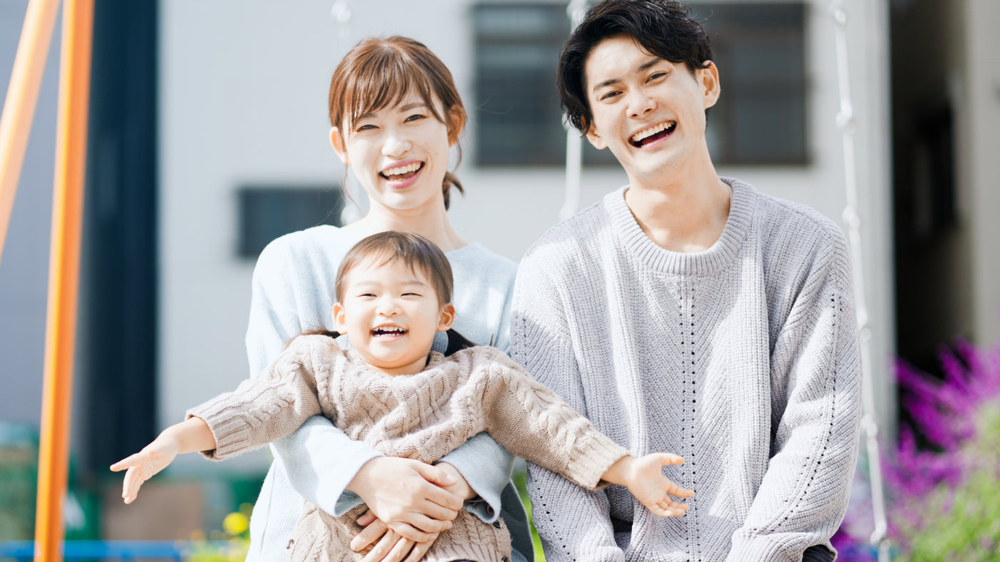

こんな“気がかり”、ありませんか？
「ことばがゆっくりかも」「園で“気になる”と言われた」――そんな小さな段階から、大丈夫。 診断がなくても構いません。どこに相談すればいいか分からないとき、いちばん最初に頼れる場所をめざしています。

どれも、よくいただくご相談です。あてはまるものが一つでもあれば、それがはじめの一歩になります。
その“気になる”を、ひとりで抱えなくて大丈夫。 まずは、お話を聞かせてください。答えを出す前の「整理」から、ごいっしょします。
むずかしく聞こえますが、ひとことで言えば “いっしょに考える相談の窓口” です。
相談支援は、市区町村の制度にもとづく公的なサービス。ご家族の費用負担はありません。 私たちは、サービスを売る会社ではありません。「何から始めればいい？」を整理し、必要な支援や手続きにつなぐ役目です。 相談だけでも、もちろん大丈夫です。
※ 使うサービスは世帯の所得に応じた月額上限（0円／4,600円／37,200円）があり、多くは月0〜4,600円程度。相談支援そのものは、いつでも無料です。
「結局、どうしたらいいの？」に、具体的にお応えします。
困りごとを整理し、これからの見通しを一緒に立てます。
受給者証の申請や、使える支援をわかりやすくご説明します。
お子さんに合った利用計画（サービス等利用計画）を作成します。
学校や医療と連携し、利用が始まった後も定期的に見直します。
「18歳の壁」を越えて、同じ相談員が長く伴走。進学・就労の節目も一緒に。
強度行動障害・医療的ケアにも対応できる研修修了者が在籍。まずはお話を。
「気になる」という今の段階から相談できます。困りごとの“今”に寄りそいます。
― 年代ごとの見通し（横に広がるサポート）
はじめての気づきと、健診で言われたことへの不安に寄りそいます。
園・療育とのつながりをつくり、就学に向けた準備を一緒に進めます。
支援級・放課後等デイサービスの組み合わせを整理します。
発達特性に合った進路選択を、本人と一緒に考えます。
大人の相談支援へ、切れ目なく支援を引き継ぎます。
むずかしい準備は要りません。まずはLINEの一言から。
準備は要りません。困っていることをそのまま。
お子さんと暮らしの様子をていねいに伺います。
お子さんに合った相談計画をご提案します。
学校・園・医療とチームでつながります。
ご家族の意思を大切に、利用を決めます。
定期的に振り返り、成長に合わせて調整します。
岡山市・倉敷市から年間およそ150件のご相談をいただいています。市の平均を上回る実績は、地域の信頼の証です。
健診での指摘に不安を抱えていたお母さま。LINEでの一言から療育につながり、いまは園とも連携しながら、少しずつ笑顔が増えています。最初の一歩を、これからも支えます。
※ プライバシーに配慮し、内容は加工しています。
「相談してもいいのかな」と
迷っているあなたへ。
ここは、評価されたり、何かを売られたりする場所ではありません。
相談だけでも、もちろん大丈夫。あなたのペースで、だいじょうぶです。
LINEで「友だち追加」して、メッセージを送るだけ。
気が向いたときに、あなたのペースでどうぞ。
お電話でも 080-1937-0107（月〜土 9:30–17:30）
迷うときは、岡山市 障害福祉課（086-803-1235）などの公的窓口もご利用いただけます。